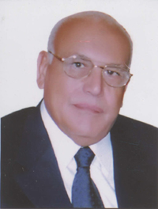

|
بسم الله الحق....وبهداه العدل......
 ها
هي الأماني تتجسد حقيقة...والتوقعات تضحى واقعاً...وإذ
بالمحكمة الدستورية العليا تقطع خطوة أخرى على درب الريادة، وتفتتح موقعها على
شبكة المعلومات الدولية "الإنترنت".
فمنذ إن نشأت المحكمة الدستورية العليا وهى تتبوأ الذرى العلى، مستقرة على قمة
البنيان القضائي المصري، شامخة بأحكامها المتميزة، زاهية بأساطين القانون والقضاء
الذين ارتقوا منصتها، وقد راعى القائمون على أمر المحكمة – دوما- مسايرة خطى
التقدم والتطور الذي يشهدها العالم من حولنا، ومن ثم كان المنطقي التفكير في إنشاء
هذا الموقع.
وقد تغيبت المحكمة من إنشائها للموقع غايات عدة، أولها:تيسير حصول
المشتغلين بالقانون خاصة والمهتمين بالشأن العام – عامة – على أحكام المحكمة
وقراراتها فضلاً عن إطلاعهم على أهم الوثائق الخاصة بها، سيما أن أحكام المحكمة
وقراراتها ذات طبيعة عينية ملزمة للكافة، ثانيها:إتاحة الفرصة للباحثين
لمتابعة تطور أحكام المحكمة في مراحلها الزمنية المختلفة، وكيفية تطبيقها لأحكام
الدستور وطريقة استخلاصها لقواعده ومبادئه الحاكمة، ثالثها: تعريف غير
المصريين بأحكام المحكمة، وإعطاؤهم صورة حقيقية عن التقدم التشريعي والقضائي
لوطننا العزيز مصر – من خلال ترجمة أهم أحكام المحكمة إلى اللغتين الإنجليزية
والفرنسية – بعد أن لوحظ ندرة المعلومات لدى هؤلاء عن القانون المصري وأحكام
محاكمة العليا، اخذين في الاعتبار انه قد توافر للمحكمة ثروة من الأحكام من بينها
ما يكافىء بل – ويبز – أحكام نظيرتها من المحاكم الدستورية الأخرى في أعرق الأنظمة
القضائية، خاصة في مجال صون الحقوق وتكريس الحريات، والإطلاع على كافة الأحكام
الدستورية في الدول الأخرى الناطقة بالعربية والإنجليزية والفرنسية، للتعرف دوماً
على الفكر الدستوري لقضاة العالم، والتمكن من الاتفاقات الدولية ونشاط الأمم
المتحدة، رابعها: عرض للنصوص الدستورية – الثابتة بطبيعتها – وكيفية تفاعلها في
الواقع العملي مع نصوص التشريعات الأدنى درجة – من قوانين ولوائح – في إطار الظروف
الاقتصادية والاجتماعية المتغيرة دوماً،
كل هذا وغيره كان في الأذهان عند التفكير في هذا الموقع.
وإننا لنسجل المعاونة الصادقة غير المحدودة في إنشاء هذا الموقع للأستاذ الدكتور
يوسف بطرس غالى وزير مالية مصر، الذي تفهم بعقلية حضارية الغاية من إنشاء الموقع
فقدم يداً قوية ترتكز عليها إدارة المحكمة في تنفيذ هذا الصرح، كما أن مركز
المعلومات ودعم اتخاذ القرار بمجلس وزراء مصر قام بجهد رائع لإخراج الفكرة إلى أرض
الواقع من خلال فريق متميز يتقدمه الدكتور ماجد عثمان رئيس المركز.
وتبقى كلمة أخيرة.....؛ إن هذا الموقع – في نهاية المطاف ما هو إلا جهد بشرى
متواضع، حاول القائمون به إن يساهموا – قدر طاقتهم – في إبراز الوجه الحضاري،
لبلدنا الغالي مصر، وان يضعوا لبنه تدعم بنيانها الشامخ.
وعلى الله القصد من قبل ومن بعد.
|